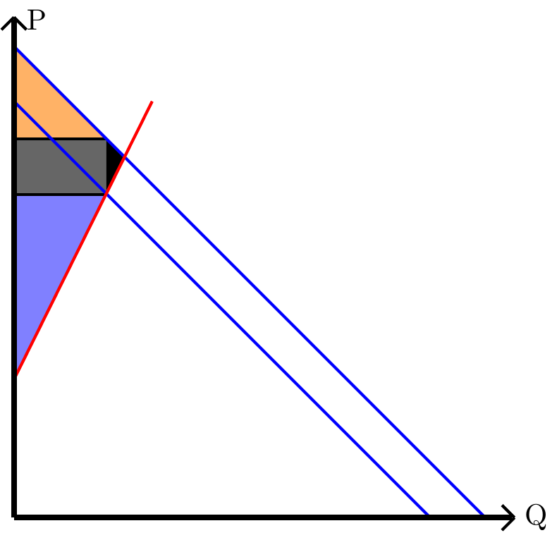

9 Sobre capítulo IV:
9.0.1 :
Reconozca la externalidad y su tipo, es decir, si es positiva o negativa, en los siguientes casos y proponga en que caso podría ser bueno aplicar un impuesto o un subsidio.
- Una empresa de textiles sintéticos que da una alta taza de empleo en la zona contamina las aguas de los ríos cercanos. \
- Una empresa forestal imaginaria de monocultivo en la provincia del Malleco erosiona los suelos, esta produce un 15% del PIB nominal de Chile. \
- Un criadero de caballos usados para deportes nacionales amansa a las crías en conjunto a una clínica que usa a estos para terapia. \
- Una fundación para ancianos tiene una buena administración, pero no tiene los suficientes recursos para calefacción. \
RESPUESTA:
- Externalidad Negativa, se le debería aplicar un impuesto. \
- Externalidad Negativa, se le debería aplicar un impuesto. \
- Externalidad positiva, al no tener problemas por enunciado, se le debería mantener igual. \
- Externalidad positiva, se le debería aplicar un subsidio. \
9.0.2 :
Para un mercado de libros tenemos las siguientes funciones de oferta y demanda:
\[ \begin{array}{cc} P(Q)=5+2Q & Q(P)=15-P\\\end{array} \]
Calcule cuanto es la máxima recaudación posible teniendo en cuenta la curva de Laffer.
RESPUESTA:
Primero calculamos la demanda inversa: \[ Q(P)=15-P \longleftrightarrow P(Q)=15-Q \]
Inserto gráfico con un impuesto arbitrario para entender los siguientes pasos:
Como se podrá ver, mientras más impuesto, crecerá de forma mayor el peso muerto, entonces intentaremos ver cuanto tiene que ser el impuesto, para que sea la máxima recaudación posible, para esto el peso muerto tiene que ser igual a lo recaudado
\[ Q_i\cdot (P_f-P_i)=\frac{(P_f-P_i)\cdot (Q_f-Q_i)}{2} \]
\[ 2Q_i=Q_f-Q_i \] \[ 3Q_i=Q_f \]
Si calculamos el punto de equilibrio inicial nos da \((3+\frac{1}{3},11+\frac{2}{3})\), entonces reemplazamos en la ecuación:
\[ Q_f=3\cdot\frac{10}{3} \] \[ Q_f=10 \]
Buscamos la nueva demanda con el nuevo punto de equilibrio.
\[ P_d(Q)=a-Q \longleftrightarrow a-10=5+2\cdot10\] \] \[ a=25+10=35 \] \[ P_di(Q)=35-Q \]
Con esto calculamos el \(P_f\):
\[ P_di(10/3)=35-\frac{10}{3}\leftrightarrow P_f=31.66 \]
finalmente la máxima recaudación es: \[ Q_i\cdot (P_f-P_i) \] \[ \frac{10}{3}\cdot (31+\frac{2}{3}-(11+\frac{2}{3})) \] \[ \frac{10}{3}\cdot 20=66.66 \]
Lo recaudado es $66.66 por unidad.
9.0.3 :
Defina con sus palbras los siguintes terminos: 1) Déficit presupuestario: 2) Superávit presupuestal: 3) Equidad horizontal: 4) Equidad vertical: 5) Impuestos proporcionales: 6) Impuestos regresivos: 7) Impuestos progresivos:
RESPUESTA:
- Déficit presupuestario: Es cuando el gobierno gasta más de lo que recibe.
- Superávit presupuestal: Es cuando el gobierno gasta menos de lo que recibe.
- Equidad horizontal: Los contribuyentes con misma capacidad de pago, pagan igual cantidad.
- Equidad vertical: Los contribuyentes con mayor capacidad de pago, pagan más.
- Impuestos proporcionales: Es cuando todos pagan los impuestos con la misma fracción de sus ingresos,
- Impuestos regresivos: Es cuando los contribuyentes de mayor ingreso pagan una menor fracción de sus ingresos en impuestos con respecto a los que tienen menos.
- Impuestos progresivos: Es cuando los contribuyentes de menor ingreso pagan una menor fracción de sus ingresos en impuestos con respecto a los que tienen más.
9.0.4 :
Un mercado no regulado, está constituido por un solo productor y varios compradores, tiene de funciones de oferta y demanda \(P(Q)=1+Q\) y \(P(Q)=5-Q\) respectivamente. El productor se corrompió y decidió aprovecharse del mercado y obtener el máximo beneficio posible. ¿Cuánto será su excedente?
RESPUESTA
Para esto, usaremos las siguientes ecuaciones:
Para calcular el máximo de la curva de Laffer:
\[ \frac{(P_f-P_i)\cdot (Q_i-Q_f)}{2}=Q_f\cdot (P_f-P_i) \]
Para calcular el excedente total: \[ EC = \int_{0}^{Q_f}{P_f-P_s(Q) \ dQ} + Q_f\cdot (P_f-P_i) \]
Primero calculamos el punto de equilibrio inicial, este será \((2,3)\)
Luego el punto de equilibrio final:
\[ \frac{(P_f-P_i)\cdot (Q_i-Q_f)}{2}=Q_f\cdot (P_f-P_i) \] \[ \frac{(Q_i-Q_f)}{2}=Q_f \] \[ Q_f=\frac{2}{3} \]
Ahora el \(P_f\) lo vemos con la demanda:
\[ P(2/3)=5-\frac{2}{3}=\frac{13}{3} \]
Finalmente el nuevo punto inicial es \((2/3,13/3)\)
Ahora reemplazamos en la ecuación del nuevo excedente: \[ EC = \int_{0}^{2/3}{\frac{5}{3}-1+Q \ dQ} + \frac{2}{3}\cdot (\frac{13}{3}-3) \] \[ EC = \frac{26}{9}+\frac{4}{9}+ \frac{2}{3}\cdot \frac{4}{3} \] \[ EC = \frac{26}{9}+\frac{4}{9}+ \frac{2}{3}\cdot \frac{4}{3} \] \[ EC = \frac{38}{9} \]
9.0.5 :
Una empresa tiene la siguiente función de producción: \[ Q(K,L)=K^3+2K^2+KL^2+L^3 \]
En el mercado de la empresa, cada unidad producida es vendida por $3 dólares.
Determine la función de la producción media de trabajo.
Determine la función del producto marginal del capital.
Asuma un \(\bar{K}=1\) y una cantidad de trabajadores \(\bar{L}=2\) ¿Cuánto es el retorno del trabajo?
RESPUESTA
\(\frac{Q(K,L)}{L}=\frac{K^3+2K^2}{L}+KL+L^2\)
\(Q'(K,L)=3K^2+4K+L^2\)
El retorno es la segunda derivada de la producción, por lo que será:
\[ Q''(K,L) = 6L \]
Evaluamos:
\[ Q''(1,2)=6\cdot 1=6 \]
9.0.6 :
Tenemos la siguiente tabla que representa el porcentaje de población acumulado de la población según su ingreso porcentual acumulado:
| decil: | Ingresos: |
| 0.1 | 0.01 |
| 0.2 | 0.02 |
| 0.3 | 0.03 |
| 0.4 | 0.06 |
| 0.5 | 0.1 |
| 0.6 | 0.15 |
| 0.7 | 0.28 |
| 0.8 | 0.39 |
| 0.9 | 0.5 |
| 1 | 1 |
Calcule la desigualdad con el coeficiente de Gini.
Grafique la curva de Lorenz.
RESPUESTA
- Usamos la formula:
\[ G=1-\left|\sum_{k=0}^{n-1}\left(X_{k+1}-X_k\right)\left(Y_{k+1}+Y_k\right)\right| \]
Las condiciones extremas que se pueden cumplir son:
\(G=0\): todos los ciudadanos tienen los mismos ingresos.
\(G=1\): todos los ingresos los tiene solo 1 ciudadano.
Y esto da: \[ G=1-0.01+0.01+0.01+0.03+0.04+0.05+0.013+0.011+0.011+0.05 \]
\[ G=1-0.235 \] \[ G=0.765 \]

9.0.7 :
Tenemos la siguiente función de producción: \[ Q(K,L)=7K^2L^3-3K\^3L \]
Calcule las siguientes medidas de forma genérica y calcule según el tipo de media la utilidad si cada producción vale $2 dolares o el tipo de retorno evaluándolas con \(\bar{K}=1\) y un \(\bar{L}=2\):
¿Para qué valor de \(L\), con \(\bar{K}=2\) el retorno de capital es una constante a escala?
RESPUESTA
| Medida: | Forma genérica: | Utilidad: |
| Producto marginal del trabajo: | \[21K^2L^2-3K^3\] | \[\$162\] |
| Producto marginal del capital: | \[14L^3K-6K^2L\] | \[\$200\] |
| Productividad media del trabajo: | \[7K^2L^2-3K^3\] | \[\$50\] |
| Productividad media del capital: | \[7L^3K-3K^2L\] | \[\$100\] |
| Retornos de trabajo: | \[42K^2L\] | \[42, \text{es creciente.}\] |
| Retornos de capital: | \[14K^3 - 3K^3L\] | \[8, \text{es creciente.}\] |
\[ \text{ret}(K,L)=14K^3 - 3K^3L \] \[ \text{ret}(4,L)=14\cdot 2^3 - 3\cdot 2^3L=1 \] \[ 14\cdot 8 - 3\cdot 8 L=1 \] \[ 112 - 24L=1 \] \[ 24L=111 \] \[ L=\frac{111}{24} \]
9.1 Sobre capítulo VI:
9.1.1 :
En Loompalandia tienen las siguientes producciones totales de los distintos mercados en los distintos años, todo evaluados en su nueva moneda wonkas (wk'') y su cantidad en unidades (u’’), admeás su producción fue siempre la misma, es decir la misma cantidad:
| Bien de consumo: | 2016 | 2017 | 2018 | 2019 |
| Producción de cacao: | 2u, 100wk | 2u, 98wk | 2u, 102wk | 2u, 100wk |
| Venta de azúcar importado: | 1u, 33wk | 7u, 12wk | 15u, 22wk | 26u, 25wk |
| Producción de caramelos: | 4u, 11wk | 3u, 17wk | 5u, 19wk | 4u, 21wk |
| Venta de envoltorios de Reino Unido: | 3u, 3wk | 3u, 3wk | 3u, 2wk | 4u, 3wk |
| Producción de chicle: | 6u, 33wk | 6u, 37wk | 5u, 39wk | 6u, 44wk |
| Producción de turrones: | 4u, 78wk | 5u, 81wk | 5u, 88wk | 5u, 98wk |
| Venta de plátano local: | 7u, 10wk | 8u, 12wk | 8u, 15wk | 9u, 18wk |
- Calcule le inflación anual, con año base 2016, de los años 2017, 2018 y 2019.
- Si un umpalumpa pone a deposito a plazo 100 wonkas con un interes del 20% en el año 2016 hasta el año 2019 e indexamos su valor al los wonkas del año 2016 ¿Cuántos wonkas tiene?
RESPUESTAS:
Para la primera parte primero calculemos los PIB nominales y reales y la inflacion según el PIB, para eso lo expresaremos en la siguinte tabla:
| Año: | PIB real: | PIB nominal: | Deflactor: | Inflación: |
| 2016: | 824 | 824 | 1 | 0% |
| 2017: | 901 | 970 | 1.077 | 7,7% |
| 2018: | 860 | 954 | 1.109 | 3% |
| 2019: | 922 | 1200 | 1.302 | 17,4% |
Recordemos que estos valores se calculan con:
| PIB de corrientes o nominal: | PIB a precios constantes o real: | Deflactor del PIB: |
| Mide la producción total de cada bien $q_{i,t}$ por sus precios $p_{i,t}$. | Mide el cambio de la producción de un bien $q_{i,0}$ por su precio con respecto a un año base $q_{i,0}$. | Calcula el nivel de precios con el PIB nominal partido el real. |
| \[Y=\sum{q_{i,t}p_{i,t}}\] | \[y=\sum{q_{i,0}p_{i,0}}\] | \[Def \, PIB =\frac{PIB\ nominal}{PIB\ real}\] |
Y la inflación con:
\[ \textrm{infalción}_t=\frac{Deflactor_t-Deflactor_{t-1}}{Deflactor_{t-1}} \]
Para la segunda parte tenemos que calcular la inflación acumulada en 4 años:
\[ \frac{1.302-1}{1}=30,2\% \]
Y cuantos wonkas tendrá el umpalumpa en el año 2019 no indexado.
\[ C_f=100(1+0.2)^3=100\cdot 1.2^3=100\cdot 1.728=172.8 \]
Ahora, indexamos para saber si ganó o perdió y que cantidad.
\[ \frac{1}{1.302}=\frac{V_i}{172.8}\Leftrightarrow V_i=\frac{172.8}{1.302}=132.72 \]
Es decir, el umpalumpa ganó un 32,72% de su capital en 3 años.
9.1.2 :
Con los datos del banco mundial y el SII, pudimos elaborar la siguiente tabla:
| Año | Inflación anual de Angola | Conversión enero 1UF a CLP | Conversión enero 1US a CLP | Conversión enero 1US a KZ |
| 2018 | $19,8\%$ | $\$26800$ | $\$640$ | $253$Kz. |
| 2019 | $17,1\%$ | $\$27565$ | $\$703$ | $365$Kz. |
| 2020 | $22,3\%$ | $\$28310$ | $\$793$ | $578$Kz. |
| 2021 | $25,8\%$ | $\$29070$ | $\$760$ | $631$Kz. |
| 2022 | No influye en el ejercicio | $\$31000$ | $\$873$ | $460$Kz. |
Usted decide el 2018 poner a deposito a plazo por cuatro años un millón de Kwanzas angoleñas a un banco que da una tasa de interés del 20% anual.
¿Cuántas kwansas tendrás al terminar los 4 años?
¿Cuánto es la inflación acumulada en los 4 años?
Si antes del deposito a plazo tenias los kwansas en UF e indexamos a UF lo invertido al terminar los 4 años ¿Cuántos UF teníamos al principio y al final?
¿De qué sirvió indexar a UF al principio y al final? ¿Por qué tomamos la referencia de la ganancia o perdida en UF y no en la inflación de Angola?
RESPUESTA
Usamos la formula: \[ C_f=C_i(1+i)^t \]
Reemplazando: \[ C_f=10^6(1+0.2)^4 \]
Desarrollando: \[ C_f=\text{$2$.$073$.$600$} \]
Explicación teórica de la pregunta:
Cuando se mide la inflación anual, tomamos como base el 1 de enero del mismo año, todos los meses del año toman el mismo momento base por lo que al acumularlas se suman. Es decir: \[ \text{Inflación acumulada por mes}_{t+1}=\text{Inflación acumulada}_{t}+\text{Inflación}_{t+1} \]
Donde \(t\leq 11\) y se mide en meses.
Pero, como estamos viendo inflación acumulada de años, funciona de forma distinta porque todos toman como momento base el primer día de su año. Entonces, para sacar la inflación acumulada en \(n\) años es: \[ \text{Inflación acumulada por año}=\left[(1+\text{inflación}_t)\cdot(1+\text{inflación}_{t+1})\cdot ... \cdot (1+\text{inflación}_{t+n})-1\right]\cdot 100\% \]
Ya que, si tenemos un bien que en el año base vale 1, y la inflación anual de los siguientes \(n\) años es \(I_k\) con $k, k n $. Entonces:
\[ \frac{1}{1+I_1}=\frac{1}{\text{Inflación acumulada 1° año}+1} \Leftrightarrow \text{Inflación acumulada 1° año}=I_1 \]
Luego:
\[ \frac{1}{1+I_2}=\frac{1+I_1}{\text{Inflación acumulada 2° año}+1} \Leftrightarrow \text{Inflación acumulada 2° año}=I_1+I_2+I_1I_2 \]
Ya al tercer año:
\[ \frac{1}{1+I_3}=\frac{1+I_1+I_2+I_1I_2}{\text{Inflación acumulada 3° año}+1} \Leftrightarrow \text{Inflación acumulada 3° año}=I_1+I_2+I_1I_2+I_1I_3+I_2I_3+I_1I_2I_3 \]
Ahora demostramos: \[ (1+I_1)(1+I_2)(1+I_3)-1=I_1+I_2+I_1I_2+I_1I_3+I_2I_3+I_1I_2I_3 \] \[ (1+I_1+I_2+I_1I_2)(1+I_3)-1=I_1+I_2+I_1I_2+I_1I_3+I_2I_3+I_1I_2I_3 \] \[ 1+I_1+I_2+I_1I_2+I_1I_3+I_2I_3+I_1I_2I_3-1=I_1+I_2+I_1I_2+I_1I_3+I_2I_3+I_1I_2I_3 \] \[ I_1+I_2+I_1I_2+I_1I_3+I_2I_3+I_1I_2I_3=I_1+I_2+I_1I_2+I_1I_3+I_2I_3+I_1I_2I_3 \]
Queda demostrado.
Vuela al ejercicio:
Aplicamos la primera formula dicha, además sabemos que la inflación de un año parte en el primer dia del año y termina en el último, por lo que del 2018 al 2021 cuentan como 4 años.
\[ 1,198\cdot 1,171 \cdot 1,223 \cdot 1,258 - 1 = 115,8\% \]
Entonces la inflación acumulada es un \(115,8\%\)
Lo que haremos ahora será convertir a varios valores distintos hasta llegar a lo pedido para eso usaremos la formula:
\[ C_{df}=\frac{C_{di}\cdot V_{df}}{V_{di}} \]
Donde: \(C_{di}\) es la cantidad numérica que tenemos de la divisa que tenemos al inicio, \(C_{df}\) es la cantidad numérica que tenemos en la divisa que nos convertimos, \(V_{di}\) es la proporción de divisa inicial que es igual al convertir en la divisa final con el valor \(V_{df}\), es decir, \(V_{di}=V_{df}\).
Como solo nos interesa saber al inicio es decir, enero de 2018 y enero del 2022, ya que ahí toma 4 años, haremos estas conversiones solo para dichos años.
2018: capital es de \(10^6\)
De Kz a US: \[ C_{df}=\frac{10^6\cdot 1}{253}=\$3952.57 \]
De US a CLP: \[ C_{df}=\frac{3952.57\cdot 640}{1}=\$2529644 \]
De CLP a UF: \[ C_{df}=\frac{2529644\cdot 1}{26800}=94.39\text{UF} \]
Entonces partimos con \(94.39\) UF
2022: capital es de \(2073600\)
De Kz a US: \[ C_{df}=\frac{2073600\cdot 1}{460}=\$4507.83 \]
De US a CLP: \[ C_{df}=\frac{4507.83\cdot 873}{1}=\$3935336 \]
De CLP a UF: \[ C_{df}=\frac{3935336\cdot 1}{31000}=126.95\text{UF} \]
Entonces, empezamos con \(94.39\) UF y terminamos con \(126.95\) UF
Como dice el enunciado “Usted”, estamos hablando de ti, y tu resides en chile, no en Angola, por lo que indexar en UF te dará una referencia de la utilidad más precisa que la de la inflación de Angola.